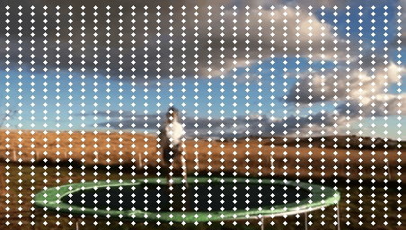
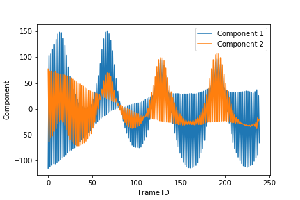
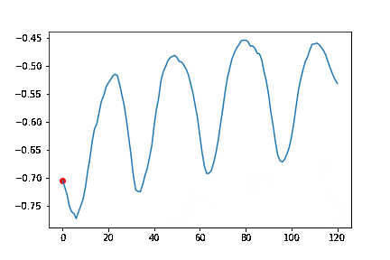

Neural Polynomial Gabor Fields for Macro Motion Analysis
ICLR 2024 Submission - Point Tracking Baseline
Anonymous Authors
Dense Point Tracking from Baseline


Phase Generated by the Proposed Method
